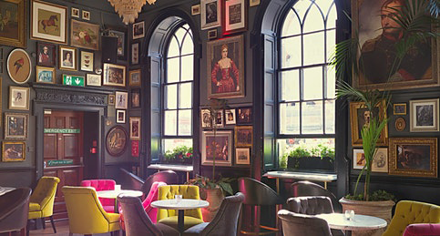

Prophecy Hotel & Spa in Emirate
Amazing Gabion Ideas for Outdoors A Gabion is a cage box or cylinder filled with rocks, concrete, or sometimes sand and soil and It is a great way to decorate your outdoor. Amazing Gabion Ideas for Outdoors A Gabion is a cage box or cylinder filled with rocks, concrete, or sometimes sand and soil and It is a great way to deco-

Nebula Hotel in Spain
Western Pyramid Resort in Egypt
Amazing Gabion Ideas for Outdoors A Gabion is a cage box or cylinder filled with rocks, concrete, or sometimes sand and soil and It is a great way to decorate your outdoor. Amazing Gabion Ideas for Outdoors A Gabion is a cage box or cylinder filled with rocks, concrete, or sometimes sand and

Wanderlust Resort in Tenerife
Amazing Gabion Ideas for Outdoors A Gabion is a cage box or cylinder filled with rocks, concrete, or sometimes sand and soil and It is a great way to decorate your outdoor. Amazing Gabion Ideas for Outdoors A Gabion is a cage box or cylinder filled with rocks, concrete, or sometimes sand and

Grand Meadows Resort in Maldives
Amazing Gabion Ideas for Outdoors A Gabion is a cage box or cylinder filled with rocks, concrete, or sometimes sand and soil and It is a great way to decorate your outdoor. Amazing Gabion Ideas for Outdoors A Gabion is a cage box or cylinder filled with rocks, concrete, or sometimes sand and

Twin Sanctuary Hotel in Great Britain
Amazing Gabion Ideas for Outdoors A Gabion is a cage box or cylinder filled with rocks, concrete, or sometimes sand and soil and It is a great way to decorate your outdoor. Amazing Gabion Ideas for Outdoors A Gabion is a cage box or cylinder filled with rocks, concrete, or sometimes sand and

Prism Hotel in Ireland

King's Shroud Resort in Spain
Amazing Gabion Ideas for Outdoors A Gabion is a cage box or cylinder filled with rocks, concrete, or sometimes sand and soil and It is a great way to decorate your outdoor. Amazing Gabion Ideas for Outdoors A Gabion is a cage box or cylinder filled with rocks, concrete, or sometimes sand and soil and It is a great way to deco-
 Vanglo House By LWPAC in Canada
Vanglo House By LWPAC in Canada
 Royal Blossom Hotel & Spa in USA
Royal Blossom Hotel & Spa in USA
 Sunrise Expanse Hotel in USA
Sunrise Expanse Hotel in USA
 Sunset Shack Hotel in Spain
Sunset Shack Hotel in Spain
 Stargaze Resort & Spa in USA
Stargaze Resort & Spa in USA
 Glorius Expanse Hotel in France
Glorius Expanse Hotel in France